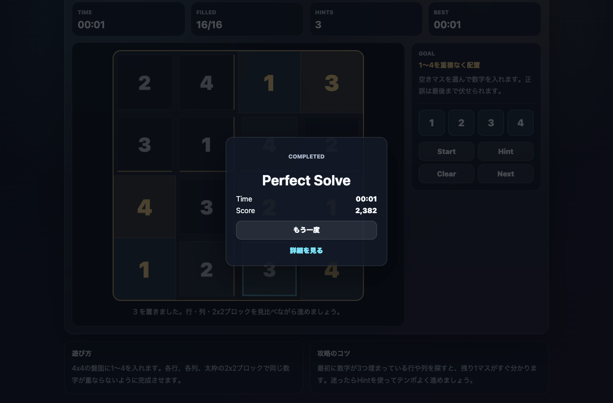

遊び方
- 空いているマスを選び、1〜4の数字を入れます。
- 各行・各列・太枠の2x2ブロックで同じ数字が重ならないようにします。
- 全てのマスを正しく埋めるとクリアです。
数独 / 数字パズル / 無料ブラウザゲーム
ミニ数独ラウンジは、4x4盤面に1〜4を入れて完成させる無料ブラウザ数独ゲームです。通常の数独より短く、スマホでもPCでも休憩時間に遊びやすい脳トレミニゲームです。

数字が3つ埋まっている行や列から見ると、残り1つが分かりやすくなります。2x2ブロックも同時に確認すると、迷うマスを減らせます。
ミニ数独ラウンジは、数独を短時間向けにした無料ブラウザゲームです。通常の9x9数独よりも軽く、インストール不要で脳トレや暇つぶしに遊べます。
数独の「分かった瞬間の気持ちよさ」を短時間で味わえます。ミニ数独、無料数独、スマホで遊べる脳トレゲームを探している人に向いています。
はい。無料ブラウザゲーム広場では、インストール不要で無料プレイできます。
4x4盤面なので、通常の9x9数独より短時間で遊べます。休憩中の脳トレに向いたミニ数独です。
スマホ・PC対応です。スマホではマスをタップして数字ボタンを押すだけで遊べます。
ミニ数独ラウンジと近い無料ブラウザゲームを、目的や端末別の入口から探せます。